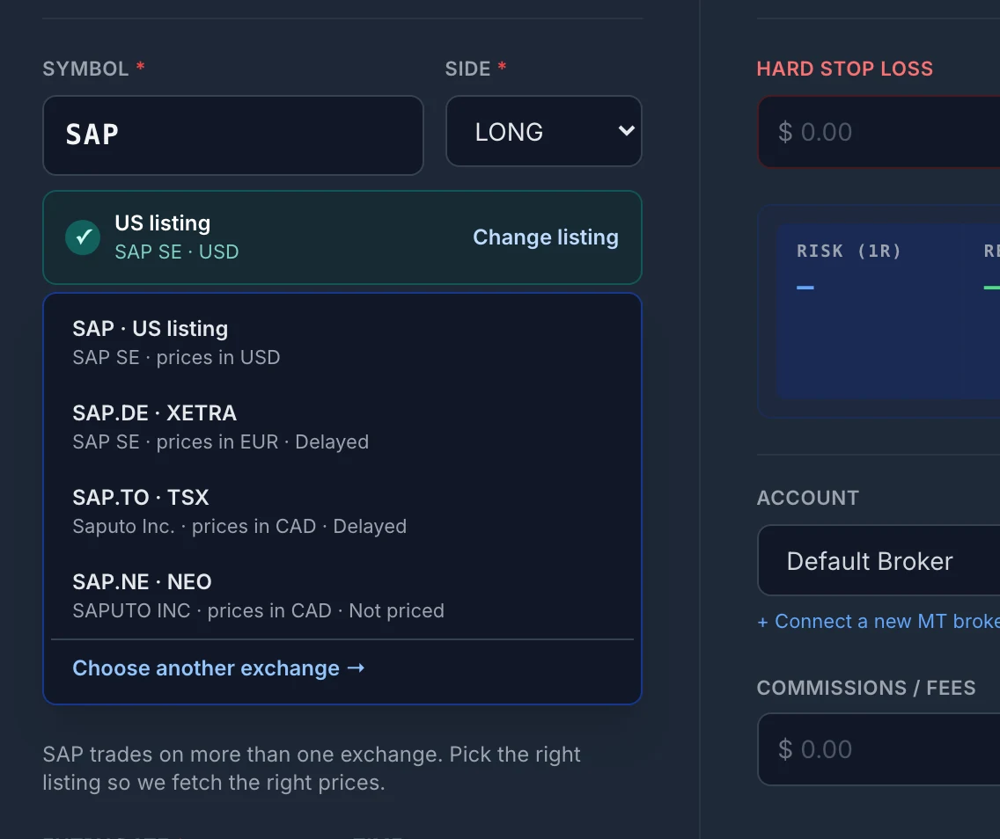
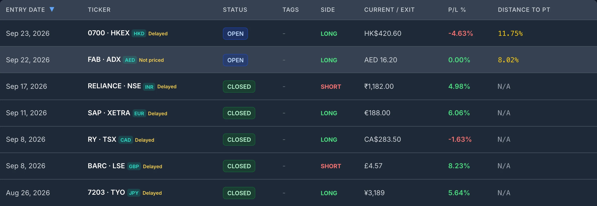
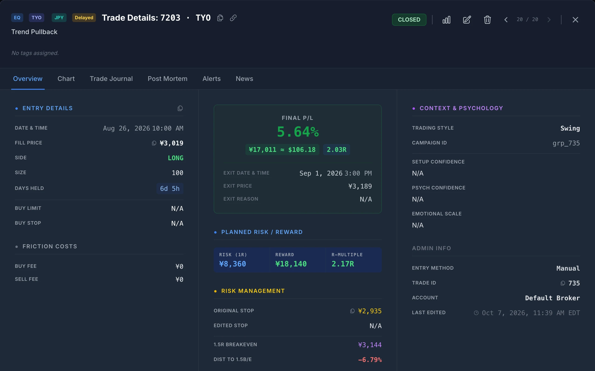
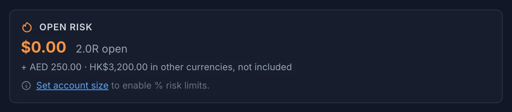

Three Ways an International Trade Gets Mangled
Each of these is a units mistake, not a judgment call. A journal that makes one of them gives you statistics that are wrong before you start interpreting anything.
1. The wrong listing
Many short tickers exist on more than one exchange, often as unrelated companies. A journal that only knows US tickers takes the letters you typed, finds the US stock with the same symbol, and prices your position off it. The chart, the unrealized P&L and the excursion figures are then measuring a company you do not own. Numeric codes in Tokyo and Hong Kong avoid the clash, but a journal that does not recognise them has nothing to price at all.

2. The wrong currency symbol
A journal that assumes dollars takes a profit of ¥28,000 and shows it as $28,000. At a USD/JPY rate of 150, the real figure is about $187, so the trade is overstated 150 times. One of those in a month of US trades swamps everything else in the total. The same applies, at smaller multiples, to pounds, euros, francs and every other currency.
3. Pence read as pounds
The London Stock Exchange quotes most shares in pence, and Johannesburg quotes in cents. A London share quoted at 1,250 is £12.50. A journal that reads the 1,250 as pounds values a 100-share position at £125,000 instead of £1,250, 100 times too large, and every stop and target on it is off by the same factor.
What an International Trade Needs to Record
Compared with a US stock, an international trade needs two extra fields, and one decision about how to report it in dollars.
- The listing. The exchange the shares trade on, not only the ticker. It decides which prices, chart and trading hours apply.
- The quote currency. The currency the price is quoted in. It is usually the exchange's home currency, but not always: some London-listed ETFs are quoted in US dollars.
- A rule for USD values. If you report a total in dollars, you need a fixed rule for which exchange rate converts each trade. Otherwise the same closed trade is worth a different number every time you look.
Everything else, including entry, exit, size, stop and fees, stays in the quote currency. A stop in yen should be compared with a price in yen.
A Worked Example: One Tokyo Trade
Illustrative numbers. You buy 100 shares of Toyota (7203.T) at ¥2,800 with a stop at ¥2,660, and sell at ¥3,080.
| In yen | Note | |
|---|---|---|
| Planned risk (1R) | ¥14,000 | (2,800 − 2,660) × 100 shares |
| Realized P&L | +¥28,000 | (3,080 − 2,800) × 100 shares |
| R-multiple | +2.0R | 28,000 ÷ 14,000: no exchange rate involved |
| USD at the exit-date rate (150.00) | ≈ +$186.67 | Fixed once the trade closes |
| USD at a later rate (140.00) | ≈ +$200.00 | What a journal using today's rate would show |
Two things follow from the table. First, the R-multiple needs no conversion at all. Risk and result are in the same currency, so it cancels out, and a +2R Tokyo trade means exactly what a +2R New York trade means. That makes R the honest unit for comparing setups across exchanges.
Second, the dollar figure depends on which day's rate you use. Convert at today's rate and the same closed trade is worth $186.67 one month and $200.00 the next, with nothing about the trade having changed. Fixing the rate at the exit date gives each trade one dollar value that does not drift afterwards.
One limit is worth stating. If you converted dollars into yen to fund the trade, the exchange rate also moved between your entry and exit, and that currency gain or loss on your cash belongs to your broker account, not to the trade. SignalDeck values the trade's yen P&L in dollars at the exit date. It does not split out the currency effect on the money you converted.
How SignalDeck Records It
- Each trade keeps its listing. Enter
7203.T,NWH.AXorASX:NWH, or type the bare ticker and pick the listing. A bare ticker with no listing chosen is treated as a US stock, and New Trade says so. Hong Kong codes are padded to four digits, so700and0700.HKare the same listing. - It never borrows a US price. If a listing has no price source, the trade shows a Not priced badge. SignalDeck does not fall back to a US stock with the same letters.
- Everything stays in the quote currency. Prices, stops, targets, fees and P&L on a Tokyo trade are shown in yen, on a London trade in pounds. London pence and Johannesburg cents are converted to pounds and rand when they are stored.
- Closed trades get a USD value at the exit-date rate. It is shown next to the native figure as an approximate dollar amount and used in USD totals on the dashboard. If no rate is available for that date, the trade is left out of the dollar total, and the dashboard says how many trades were left out.
- Open positions stay in their own currency. They are kept out of USD totals until they close. Open Risk, Portfolio Heat and the prop-firm checks list non-USD risk separately instead of adding yen to dollars.
- Charts and hours follow the exchange. Charts use the listing's own price history, the TradingView link opens that listing (for example
TSE:6702), and open positions are repriced only while that exchange is in session.



R-multiples, win rate and trade counts include every closed trade whatever its currency, because none of them needs an exchange rate.
Supported Exchanges
The six US exchanges are covered as before. These are the 22 non-US exchanges SignalDeck records today:
| Exchange | Suffix | Currency | Prices |
|---|---|---|---|
| Toronto Stock Exchange | .TO |
CAD | Delayed |
| TSX Venture Exchange | .V |
CAD | Delayed |
| Cboe Canada (NEO) | .NE |
CAD | Not priced |
| London Stock Exchange | .L |
GBP (quoted in pence) | Delayed |
| Deutsche Börse Xetra | .DE |
EUR | Delayed |
| Euronext Paris | .PA |
EUR | Delayed |
| Euronext Amsterdam | .AS |
EUR | Delayed |
| Euronext Brussels | .BR |
EUR | Delayed |
| SIX Swiss Exchange | .SW |
CHF | Delayed |
| Borsa Istanbul | .IS |
TRY | Delayed |
| Johannesburg Stock Exchange | .JO |
ZAR (quoted in cents) | Delayed |
| Saudi Exchange (Tadawul) | .SR |
SAR | Delayed |
| Dubai Financial Market | .AE |
AED | Delayed |
| Abu Dhabi Securities Exchange | ADX: prefix | AED | Not priced |
| National Stock Exchange of India | .NS |
INR | Delayed |
| BSE (Bombay Stock Exchange) | .BO |
INR | Delayed |
| Tokyo Stock Exchange | .T |
JPY | Delayed |
| Hong Kong Stock Exchange | .HK |
HKD | Delayed |
| Singapore Exchange | .SI |
SGD | Delayed |
| Korea Exchange (KOSPI) | .KS |
KRW | Delayed |
| KOSDAQ | .KQ |
KRW | Delayed |
| Australian Securities Exchange | .AX |
AUD | Delayed |
The currency column is each exchange's default. A listing quoted in another currency, such as a dollar-quoted ETF in London, keeps its own. Delayed means quotes are not live, and the listing card in New Trade marks them that way. On a Not priced exchange you can still log and close trades: the P&L comes from the exit price you enter, and there is no chart or unrealized P&L while the trade is open.
Logging an International Trade
There are three ways in, depending on how you trade.
- By hand. In New Trade, type the ticker with its suffix or pick the listing from the suggestions. The listing card shows the company, the exchange and the currency, and the price fields switch to that currency before you enter anything. Use Change listing if it picked the wrong one. Changing the listing on an existing trade clears its old quote, stops, targets and price alerts, so nothing carries over from the wrong listing.
- From Interactive Brokers. Connect through a Flex query that includes the listing exchange field. The import preview shows each trade's currency and exchange before anything is saved. Commissions charged in another currency are converted, and fill times are read correctly, so a Tokyo morning fill lands on the right day. If the field is missing, the stock is still imported in its own currency but marked Not priced, and re-importing with the field fixes it. The broker import page covers the setup.
- From other brokers. Brokers connected through SnapTrade have their listings resolved on import. The Interactive Brokers activity-statement CSV preset reads the currency column for stock rows.
Whichever route you use, record a planned stop. Without one the trade has no 1R, and a mixed-currency journal without R leaves you comparing yen with pounds.
What It Does Not Do
- No live international quotes. Non-US prices are delayed. For intraday decisions, use your broker's feed.
- No currency attribution. The USD value is the trade's native P&L at the exit-date rate, not a breakdown of how much came from the stock and how much from the currency.
- Open positions stay out of dollar totals. A non-USD position appears in its own currency until it closes.
- Stocks only. This is about shares and ETFs listed on these exchanges. SignalDeck does not record options. Forex, futures and crypto are covered separately, as before.
What to Do With This
If you already journal international trades somewhere, look at one closed trade in a currency other than your own. Check three things: the listing it was priced from, the currency symbol on the P&L, and, for London or Johannesburg, whether the price is in pence or pounds. If any of them is wrong, your totals and averages are wrong too. If you keep only one figure per trade, make it the R-multiple. It is the one number on an international trade that does not depend on an exchange rate. For the rest of what a stock journal should track, see the stock trading journal guide.
Frequently Asked Questions
Can I journal stocks that trade outside the US?
Yes. SignalDeck records stocks on 22 non-US exchanges, including Tokyo, Hong Kong, London, Xetra, Euronext Paris, Amsterdam and Brussels, SIX Swiss, the TSX and TSX Venture, the ASX, the NSE and BSE in India, Singapore, Korea, Johannesburg, Istanbul, Saudi Arabia and Dubai. Type the ticker with its exchange suffix, such as 7203.T or NWH.AX, or the exchange prefix, such as ASX:NWH, or type the bare ticker and pick the listing from the list. Each trade keeps its exchange and the currency it is quoted in.
Does SignalDeck convert my international trades to US dollars?
Prices, stops, targets and P&L stay in the currency you traded in and are never converted. When a trade closes, SignalDeck also stores a USD value of its P&L at the exchange rate for the exit date, and shows it next to the native figure. Dollar totals on the dashboard include closed non-USD trades at that stored value. Open positions in other currencies are shown in their own currency and kept out of USD totals until they close.
Are international stock prices live?
No. Open positions on non-US exchanges are repriced from delayed quotes while that exchange is open, and hold their last price when it closes. The listing card in New Trade marks these listings Delayed. Two supported exchanges, Cboe Canada (NEO) and the Abu Dhabi Securities Exchange, have no price source yet: you can still log and close trades there, and P&L is calculated from the exit price you enter.
How do I import international trades from Interactive Brokers?
Connect Interactive Brokers through a Flex query that includes the listing exchange field. SignalDeck uses it to put each stock on its real listing, keeps the contract currency, and converts commissions charged in a different currency. A stock whose listing exchange is missing is still imported, in its own currency, but marked Not priced until you re-import with the field included. Brokers connected through SnapTrade also have their listings resolved.
Why journal in R-multiples when trades are in different currencies?
An R-multiple divides the result by the amount you planned to risk, in the same currency, so the currency cancels out. A yen trade that made twice its planned risk is +2R, and so is a dollar trade that did the same. That makes R the one measure you can compare across exchanges without picking an exchange rate, which is why SignalDeck's win rate and R statistics include every closed trade whatever its currency.
How SignalDeck Compares
Two widely used journals, set against one that records each stock on its own exchange.
Related Articles
The Stock Trading Journal
Gaps through stops, earnings and the rest of what a stock journal should track.
What Is an R-Multiple?
The unit that lets a yen trade and a dollar trade be compared directly.
Trading Journal Platform Support
How trades get into SignalDeck, by broker and platform.
Broker Statement vs Trading Journal
What a broker export records, and what only your journal can.
Journal every trade on its own exchange
Record stocks on 22 non-US exchanges in the currency you traded them in, with R-multiples that compare across all of them. Free during beta; Pro is $30/mo and Elite $50/mo when billing launches.